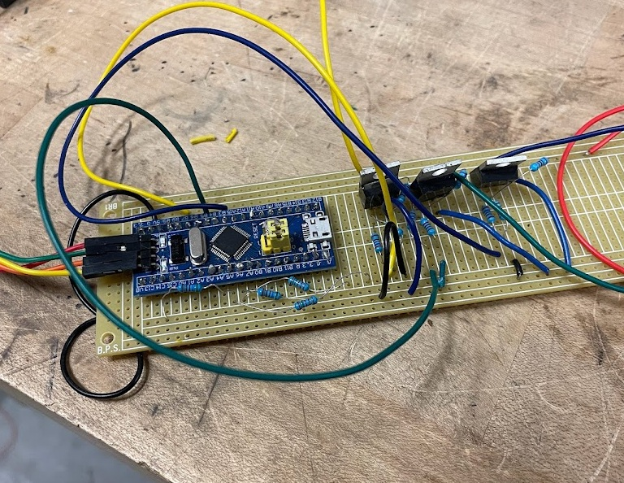
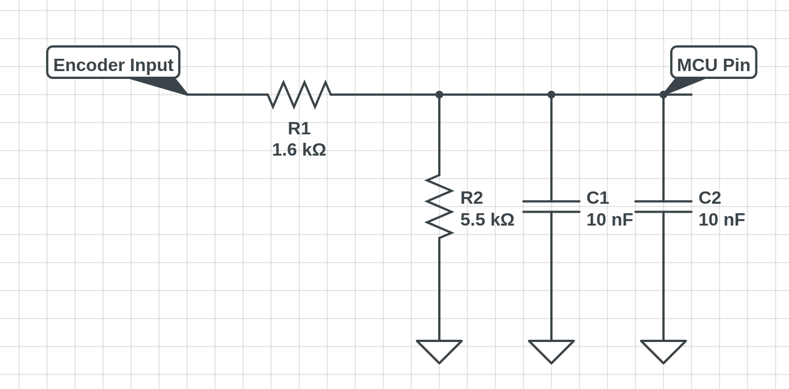
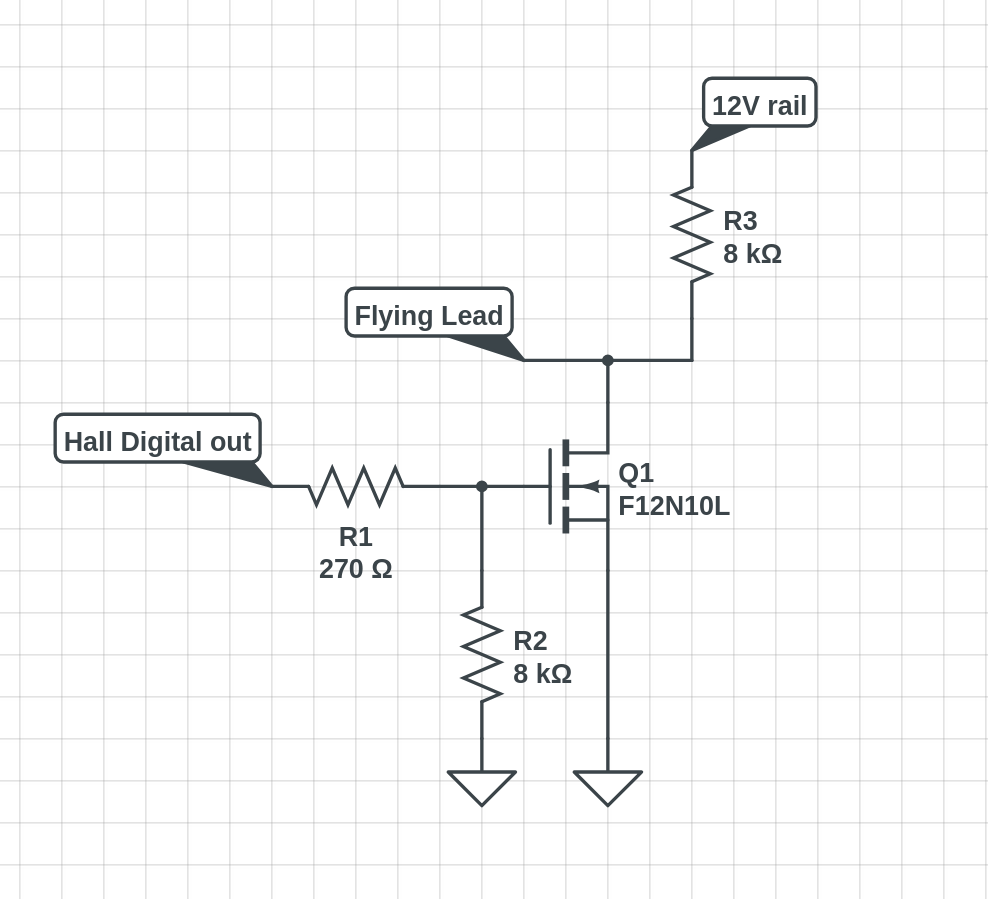

Overview
When our team hit a critical roadblock before a competition, I developed an encoder emulator to keep progress moving. Our motor controller required Hall A/B/C signals to even attempt calibration, but our motor only had a sin/cos encoder installed. Installing Hall sensors would have voided the motor warranty and violated competition rules, and replacing the controller wasn’t in the budget. Instead, I built a firmware and hardware solution to emulate the missing Hall signals from the existing encoder.
Hardware Overview
The emulator was implemented on an STM32 “Bluepill” development board mounted to a protoboard. Input from the sin/cos encoder was processed through a 1.6 kΩ / 5.5 kΩ resistor voltage divider
 and filtered with 20 nF of capacitance. The output stage used an open-collector FET circuit tied to 12 V to match the motor controller’s expected electrical interface. Hall signal patterns were hardcoded based on our understanding of PMAC motor operation. The sequence repeats every 360 electrical degrees, which for our 10-pole-pair motor corresponds to 36 mechanical degrees.
Firmware Design
The firmware generated Hall A/B/C outputs directly from the simulated rotor position, following a predefined six-state table. While the sequence itself was straightforward, ensuring signal integrity proved challenging. I implemented both hardware and software filtering to smooth out the output and reduce noise that could cause the controller to reject the signal.
Testing & Outcome
The emulator successfully convinced the motor controller to begin calibration and produce motion, buying us time until a replacement controller could be sourced. However, the emulated signals did not produce race-ready performance, tuning was poor, and high-speed stability was lacking. Ultimately, the project demonstrated quick, practical problem-solving under tight constraints, even if the final fix required new hardware.
View Repo